호르무즈 해협 긴장과 에너지 안보
2025년 6월 13일, 이스라엘이 이란의 주요 군사시설을 공습하면서 중동 정세가 급속히 악화되었다. 미국까지 이란의 핵시설을 직접 타격하면서 대응 조치로 이란 의회는 호르무즈 해협의 봉쇄를 의결했다. 호르무즈 해협은 페르시아만과 인도양을 잇는 전략적 요충지로, 이곳을 통과하는 유조선 대부분이 수심이 깊은 이란 쪽 해역을 이용하기 때문에 실질적으로 이란의 영향력 아래에 놓여 있다(최지웅 2019).

전 세계 원유 수송량의 약 20% (EIA, 2025) 가 통과하는 호르무즈 해협이 봉쇄되면 전 세계 에너지 공급망은 심각한 혼란을 겪게 되고, 이는 즉각 국제 유가 급등과 글로벌 경제 전반에 파장을 일으킨다. 이처럼 특정 지역에서의 갈등이 전 세계 에너지 시장과 각국의 일상에까지 직결되는 오늘날의 현실은, 단순한 정치·외교 이슈를 넘어 ‘에너지 안보’의 문제로 자리 잡았다. 그러나 이러한 양상은 결코 새로운 일이 아니다. 석유가 본격적인 전략자원으로 부상한 20세기 초 이래, 석유는 전쟁의 배경이자 도구였고, 전쟁은 다시 석유 지정학을 뒤바꾸는 주요 변수가 되어 왔다. 이번 호에서는 제1·2차 세계대전부터 중동 전쟁, 걸프 전쟁, 그리고 현재 진행 중인 분쟁에 이르기까지, 전쟁과 석유가 얽혀온 역사적 사례를 통해 전쟁과 석유, 그리고 지정학의 복잡한 관계를 살펴보고자 한다.
제1차 세계대전: 전력의 열쇠가 된 석유
제1차 세계대전은 석유가 전쟁의 흐름을 실질적으로 바꿔 놓은 첫 번째 전쟁이었다. 전쟁이 발발한 1914년 이전부터 미국은 이미 캘리포니아, 오클라호마, 텍사스 등지에서 대규모 유전을 개발하고 있었으며, 조명과 난방, 교통수단의 연료로 석유를 폭넓게 활용하고 있었다. 영국 역시 1911년 해군의 연료를 석탄에서 석유로 전환하며 해군력 강화를 도모했고, 앵글로-페르시아 석유회사(현 BP)를 설립해 이란 유전 개발에 뛰어드는 등(Robert McNally, 2017), 석유는 이미 전쟁 이전부터 주요 전략 자원으로 인식되고 있었다.
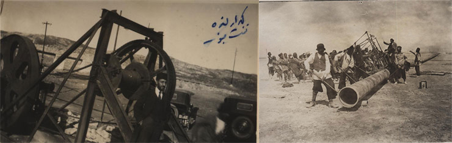
앵글로-페르시아 석유회사의 노동자들 (1908년)
전쟁 발발 후 독일의 예상을 깨고 전쟁이 장기화 국면으로 접어들면서, 석유의 중요성은 더욱 극명하게 드러났다. 세계 원유 생산의 대부분이 연합국 측에 집중되어 있었기 때문에, 독일은 전쟁 내내 심각한 석유 부족에 시달려야 했다.
전차, 잠수함, 군용 차량과 같은 현대적 전쟁 장비들이 석유를 연료로 작동하는 상황에서, 석유의 부족은 곧 전력의 약화를 의미했다. 독일은 이를 타개하기 위해 1916년 루마니아 유전 지대를, 1918년에는 러시아의 바쿠 유전을 점령하려 했지만, 결국 안정적인 자원 확보에는 실패했다. 이로 인해 독일은 더 이상 전쟁을 지속할 동력을 상실했고, 이는 전쟁의 종결을 앞당기는 하나의 요인이 되었다. 제1차 세계대전은 석유가 전쟁의 발발 원인은 아니었지만, 전쟁의 양상을 바꾸고 그 승패를 결정짓는 결정적인 자원으로 떠오른 첫 무대였다. 이후 석유는 군사력의 핵심 기반이자 국제 질서를 좌우하는 전략 자산으로 자리 잡게 된다.
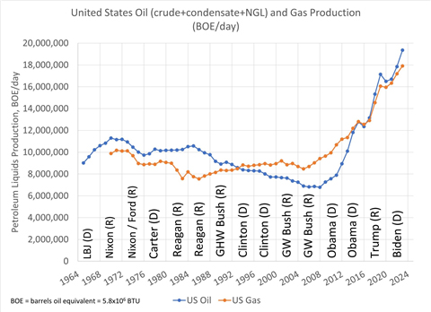
루마니아 유전을 방문한 빌헬름 2세
제2차 세계대전: 전쟁의 원인이자 결과로 작용한 석유
제1차 세계대전을 통해 석유의 전략적 가치를 절감한 독일은, 자국 내에 유전이 없다는 한계를 극복하기 위해 루마니아와의 협력 관계를 공고히 하고, 석탄에서 액체 연료를 생산하는 석탄액화 기술을 발전시켜 합성연료를 자체적으로 확보하려 노력했다. 그러나 석유 자원에 대한 구조적인 취약성은 여전히 존재했다. 1939년 독일의 폴란드 침공으로 제2차 세계대전이 발발했으며, 그 배경에는 베르사유 조약의 가혹한 조건, 경제 불안정, 민족·이념적 갈등 등 자원과 관련 없는 다양한 요인이 있었다.
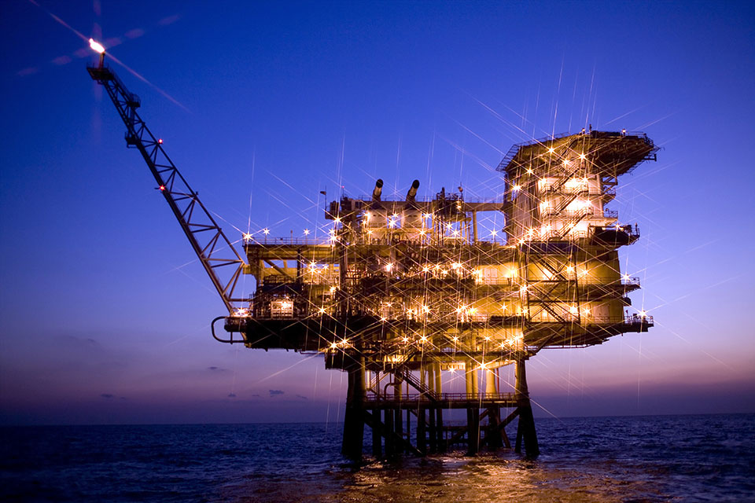
미국 폭격 이후 바라본 함부르크 정유소 조감도(1944년 6월 20일)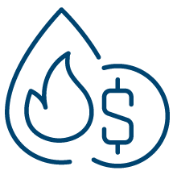
하지만 전쟁 수행 단계에서 석유는 전차, 항공기, 군수 물자 운용에 필수적인 자원으로 부상했으며 전쟁의 방향을 결정짓는 중요한 역할을 하였다. 추축국은 연합국에 비해 석유 확보 능력이 현저히 떨어졌고, 폴란드 점령과 루마니아 유전 확보, 합성연료 생산량 증대에도 불구하고 만성적인 석유 부족에 시달렸다.
독소전쟁에서도 독일은 소련 원유 생산의 상당부분을 차지하는 캅카스
유전지대를 침공하여 석유 공급망을 확보하려고 했다(서울경제 2016).
하지만 길어지는 전쟁으로 석유 소비량이 기하급수적으로
증가하였으며, 연합국의 루마니아 정유소 공습과 스탈린그라드
전투에서의 패배로 인한 소련 유전지대 확보 실패로 인해 보유한 군수
장비의 절반조차 가동할 수 없을 정도의 연료난에 직면했고,
이는 전쟁 패배의 결정적 요인 중 하나가 되었다.
유럽 전역에서의 전쟁이 석유에 의해 시작된 것은 아니었지만,
지구 반대편에서 발발한 태평양 전쟁은 석유가 직접적인 도화선이
된 전쟁으로 평가된다.
일본은 전쟁 이전부터 이미 식민지 확장을 통한 자원 확보에 주력하고
있었으며, 독일·이탈리아와의 삼국동맹 체결을 통해 추축국의 일원으로
전쟁에 참여했다. 1941년 여름, 독일이 소련을 침공하였을 때 일본도
남진 정책을 가속화하며 인도차이나 남부로 진출했다. 이는 동남아
자원을 확보하려는 전략으로 곧 미국의 석유 금수 조치를 불러왔고,
결국 약 5개월 후 일본이 진주만 공습을 감행하며 태평양 전쟁이
시작되었다. 일본은 전쟁 초기 동남아 지역의 전투에서 상당한 성과를
거두었지만, 1942년 미드웨이 해전에서의 결정적 패배 이후 해상
수송로가 차단되었고,
극심한 석유 부족 속에서 전쟁을 지속할 수 없었다. 1945년 일본의
항복은 단지 군사적 패배뿐 아니라, 결정적으로 석유 확보에 실패한
결과이기도 했다.
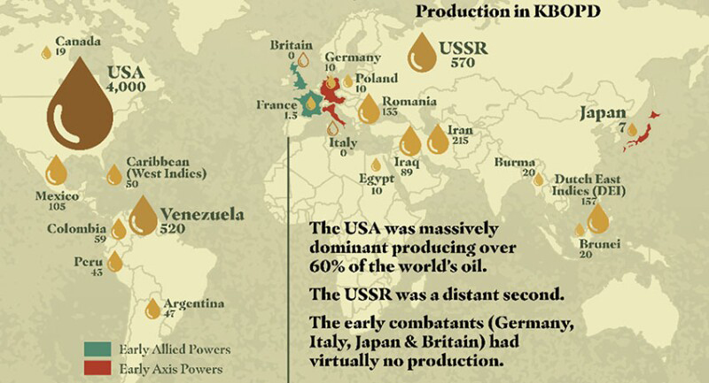
2차 세계대전 당시(1939년) 석유 생산량 (KBOPD: Thousand Barrels of Oil Per Day 하루 천 배럴의 석유 생산량)출처: SPE news 2025
(Howard Duhon and Tony Richards, 2025, SPE Delta Section: A Study of the Role of Oil in World War II and Its Strategic Impact, Journal of Petroleum Technology,
https://jpt.spe.org/spe-delta-section-a-study-of-the-role-of-oil-in-world-war-ii-and-its-strategic-impact)
제2차 세계대전은 석유가 단지 전쟁 수행의 수단에 그치지 않고, 전쟁의 원인으로까지 작용할 수 있음을 보여준 대표적 사례다. 미국을 포함한 연합국은 자국 및 남미, 중동 등지에서 안정적으로 석유를 확보하며 전쟁 기간 동안 총 70억 배럴 이상의 석유를 사용한 반면, 추축국이 확보한 석유는 1억 배럴 내외에 불과했다(Thunder said Energy, 2022; Duhon and Richards, 2025). 석유 자원의 절대량과 공급 안정성만 놓고 보더라도 전쟁의 향방은 이미 정해져 있었던 셈이다. 2차 세계대전을 통해 전 세계는 석유의 생산과 통제, 그리고 운송에 주목하기 시작했고, 점차 막대한 석유 매장량을 가진 중동으로 분쟁의 중심이 옮겨가게 되었다.
석유를 둘러싼 중동의 분쟁
중동이 석유와 관련된 분쟁의 중심이 되었음을 전 세계가 인식한 사건은 ‘수에즈 위기(Suez Crisis)’ 이다. 1956년 이집트의 나세르 정권은 영국과 프랑스가 소유하던 수에즈 운하를 일방적으로 국유화하였으며, 이에 반발하여 영국·프랑스·이스라엘 연합은 시나이 반도와 수에즈 운하를 군사 점령하였다. 이 당시 유럽은 원유 수입 중 약 85%를 중동에 의존하였으나(Petroleum Industry Research Foundation, 1956) 수에즈 운하 통행이 불가해짐에 따라 석유 공급에 큰 차질이 발생하였다. 당시 세계 최대 산유국이었던 미국은 영국과 프랑스가 군대를 철수하지 않으면 유럽에 대한 원유 공급을 중단하겠다고 경고했고 소련 역시 런던과 파리를 핵 공격하겠다고 위협하여, 결국 수에즈 운하의 소유권은 이집트 정부에 넘어가게 되었다. 이 사건은 중동이 단지 석유의 생산지가 아니라 석유의 흐름과 통제권을 둘러싼 국제적 긴장의 중심 무대가 되었음을 보여준 사건이었다.
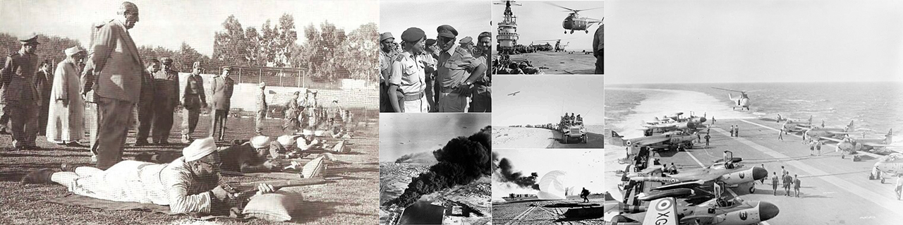
수에즈 위기 당시(1956년)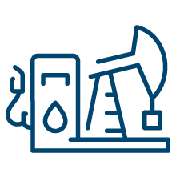
1950년대 이후 중동에서 석유를 둘러싼 정치적 충돌은 점점 더 전면적인 무력 충돌과 글로벌 경제 충격으로 확산되었다. 그 대표적인 사례가 바로 1973년 제4차 중동전쟁과 제1차 오일쇼크다.
이집트와 시리아가 이스라엘을 기습 공격하면서 시작된 이 전쟁에서, 일방적으로 밀리는 전세를 뒤집기 위해 이스라엘은 미국에 군사 지원을 요청했다. 미국을 비롯한 서방국가들이 이스라엘을 공개적으로 지원하자, 이에 반발한 아랍 산유국들은 OPEC을 중심으로 석유 수출 제한과 감산 조치를 단행했다. 당시 배럴당 3달러 선이던 국제 유가는 감산 조치 이후 11.65달러까지 치솟으며 약 4배 급등했고(박재형, 2008), 이는 전 세계에 심각한 에너지 위기와 인플레이션, 경제 침체를 불러왔다. 이러한 충격은 단순한 유가 상승 그 이상이었으며, 제1차 석유파동은 아랍 산유국들이 단결하여 석유를 외교·안보 전략의 무기로 사용할 수 있다는 사실을 전 세계에 각인시켰다.
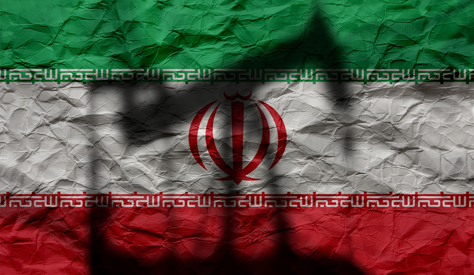
이란 국기를 배경으로 석유 시추 펌프의 실루엣이 드리워져 있다.
1차 오일쇼크 이후에도 중동에서는 석유를 둘러싼 정치적 긴장과 무력
충돌이 이어졌다. 1970년대 말 이란 혁명과 그 여파로
이란-이라크 전쟁과 제2차 오일쇼크가
발생하였으며 1990년대에 들어서면서
이라크가 쿠웨이트를 침공하며 걸프전이 발발하였다. 중동 지역 석유에 상당 부분 의존하던 미국은 1, 2차
오일쇼크와 중동 분쟁을 통해 중동 지역에서의 석유 공급 차질이
가져온 정치·경제적 충격을 경험했기 때문에 에너지 안보 측면에서
이라크의 확장을 방치할 수 없었다. 미국은 이라크의 중동 지역 석유
통제를 저지하여 에너지 수급의 안정성을 확보하고자 하였고 미국의
본격적인 공습 후 약 6주 만에 이라크 군은 쿠웨이트에서 철수하며
걸프전은 종결되었다(장성일 2008).
약 10년 후, 미국은 이라크가 대량살상무기를 보유하고 있어 국제
평화를 위협한다는 이유로 이라크를 침공하며
제2차 걸프전이 발발했다. 그러나
전쟁 이후에도 대량살상무기는 발견되지 않았고, 오히려 미국이 중동의
석유 자원에 대한 전략적 통제를 강화하려 했던 것이 실제 전쟁의
배경이었다는 분석이 다수 제기되었다. 이라크 전쟁 이후에도 중동은
좀처럼 안정을 되찾지 못했다.
이란의 핵 개발 문제와 시리아·리비아 내전은 국제 사회의 지속적인
갈등 요인으로 작용했으며, 이들은 모두 글로벌 에너지 공급망에
불확실성을 더하고 국제 유가의 변동성을 키우는 주요 원인이
되었다.
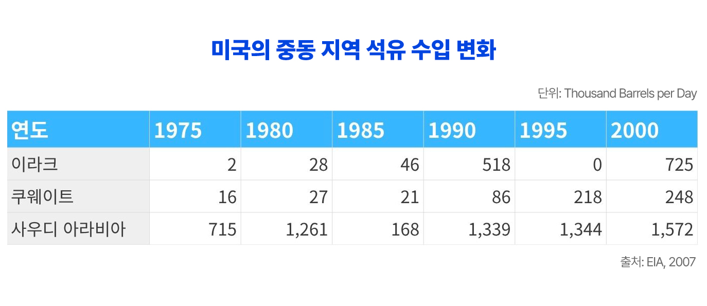
현재도 여전한 석유의 전략적 영향력
2010년대에 들어서면서, 미국은 셰일 혁명을 통해 세계 최대 산유국으로 부상하였고, 동시에 기후위기에 대한 전 세계적 인식 확산으로 화석연료 사용을 줄이려는 국제적 움직임도 본격화되었다. 이러한 흐름 속에서 석유의 전략적 가치가 점차 낮아질 것이라는 전망도 제기되었다.
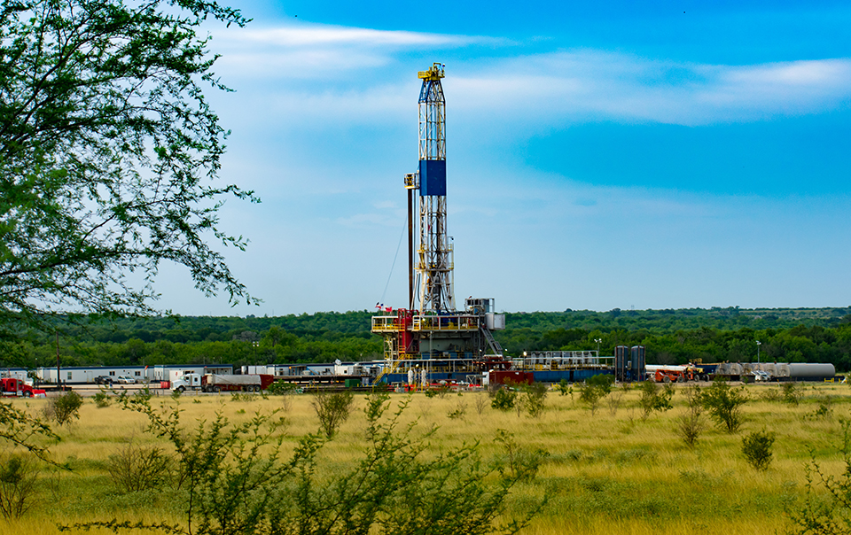
미국 셰일웰 프래킹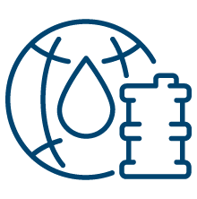
그러나 2022년 발발한 러시아-우크라이나 전쟁에서 러시아의 에너지 수출 중단은 전 세계 에너지 공급망에 심각한 혼란을 불러왔고, 전쟁 직후 국제 유가는 약 93달러에서 127달러까지 치솟았다(에너지경제연구원, 2022). 이는 석유와 천연가스가 여전히 국제 질서를 뒤흔들 수 있는 강력한 지정학적 무기임을 다시금 입증한 사례로 볼 수 있다.
이처럼 20세기 초부터 이어져 온 석유와 전쟁의 복잡한 관계는, 2025년 현재에도 여전히 유효하다. 다시 처음으로 돌아가서, 6월 이스라엘과 이란 간의 무력 충돌과 호르무즈 해협 봉쇄 위협은 석유가 단순한 자원을 넘어 국제 안보 질서를 뒤흔드는 핵심 변수임을 다시금 보여주었다. 과거 사례들과 마찬가지로 호르무즈 해협에 대한 전면 봉쇄로 이어지지는 않았지만, 봉쇄 ‘가능성’만으로도 국제 유가는 급등했고, 글로벌 금융시장과 물류 시스템은 즉각적인 반응을 보였다. 이러한 현실은 석유의 시대가 저물어간다는 일부 전망이 시기상조임을 말해준다. 기후위기에 대응하기 위한 탈탄소 전환이 본격화되고 있지만 여전히 석유를 비롯한 기존 화석연료가 세계 경제와 정치의 기반을 이루고 있으며, 지정학적 충돌의 중심에 설 가능성 또한 여전히 크다. 결국 에너지 안보는 어느 한 국가의 문제가 아니라 전 세계가 공동으로 대응해야 할 과제다. 석유를 둘러싼 역사적 경험과 현재의 상황은 우리가 앞으로의 에너지 전환과 국제 협력을 어떤 방향으로 이끌어가야 할지를 다시금 숙고하게 한다.
박재형. 2008, 미국의 분열적 중동정책과 제1차 석유파동:아랍-이스라엘, 메이저 회사, 국내정치적 구조. 한국중동학회논총, 28(2), 43-87.
서울경제, 2016, 히틀러 몰락의 숨은 이유 https://www.sedaily.com/NewsView/1KWA8V3CZP
장성일, 2008, 에너지 안보와 국가 안보 : 제1차 걸프전쟁과 미국의 군사 개입. 에너지경제연구, 7(2), 245-271.
에너지경제연구원, 2022, 세계 에너지시장 인사이트 제22-6호
최지웅, 2019, 석유는 어떻게 세계를 지배하는가
Duhon, H., and Richards, T., 2025. A study of the role of oil in World War II and its strategic impact. Journal of Petroleum Technology. https://jpt.spe.org/spe-delta-section-a-study-of-the-role-of-oil-in-world-war-ii-and-its-strategic-impact
Energy Information Administration (EIA), 2007, Monthly Energy Review September
Energy Information Administration (EIA), 2025, Short-Term Energy Outlook
Petroleum Industry Research Foundation, 1956, The European Oil Market: Past, Present and Future (PIRINC Reports On). https://eprinc.org/wp-content/uploads/2023/08/The-European-Oil-Market-July-6-1956.pdf
Robert McNally, 2017, CRUDE VOLATILITY
Thunder said Energy., 2022. Oil and war: ten conclusions from WWII. https://thundersaidenergy.com/2022/03/03/oil-and-war-ten-conclusions-from-wwii/